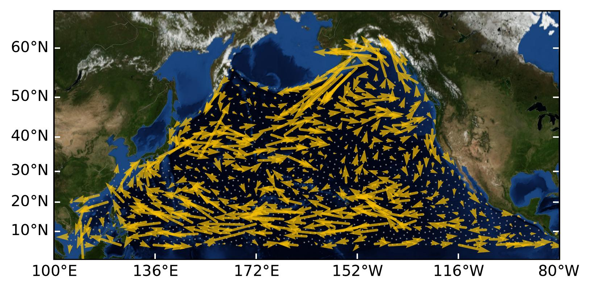
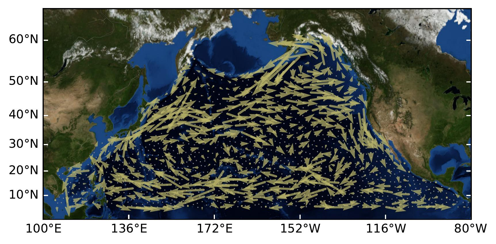
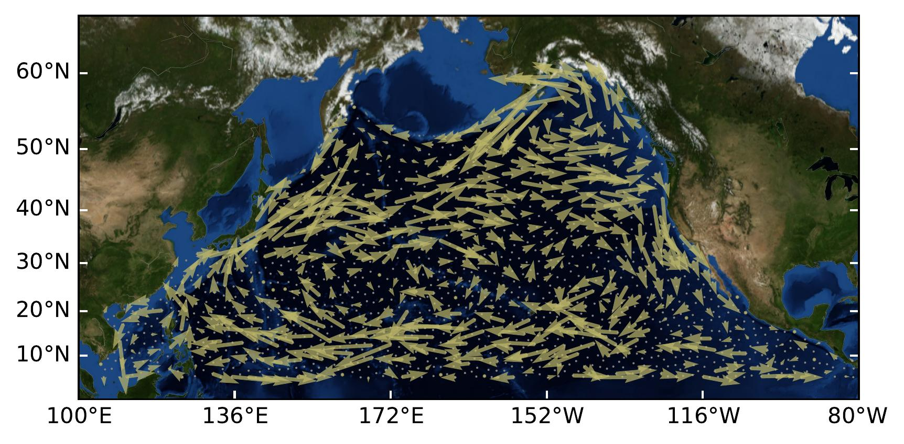
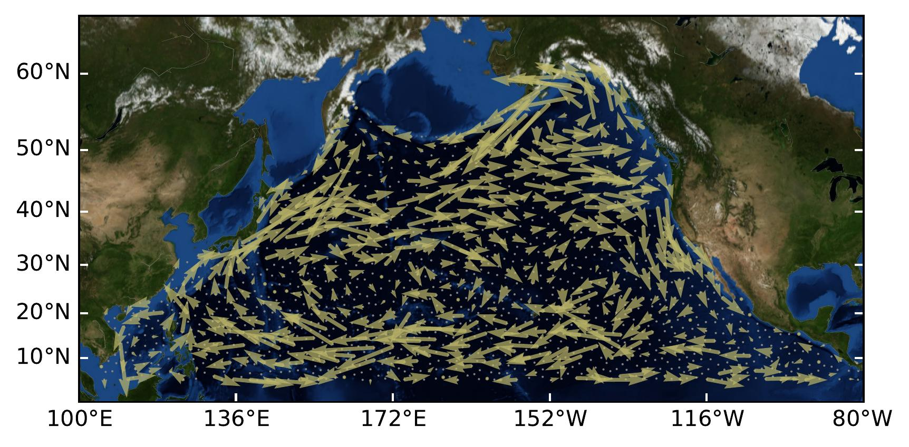

About
News
- My paper Topological Schrödinger Bridge Matching is accepted to ICLR Spotlight, 2025. [Paper]
- I gave an invited talk on my PhD work at Applied Math Seminar in Utrecht University. [Slides]
- I have been awarded a travel fund from G-research to attend the LOGML summer school in July. Appreciate the opportunity very much!
- I gave an invited talk on my PhD work to Computational neuroEngineering Lab at the University of Florida. [Slides]
- I gave an oral presentation at the DEEPK workshop in KU Leuven. [Slides]
- I gave a talk on my work on Simplicial Convolution at AMLab, Amsterdam. [Slides]
- Our paper on "Hodge-compositional Edge Gaussian Processes" was accepted by AISTATS 2024.
- I gave a talk about my work on Simplicial Convolution at the Delft AI Energy Lab.
- I gave a talk about my work on Simplicial Convolution at BNAIC 2023 and logAMS 2023.
- A preprint Hodge-compositional Edge Gaussian Processes was out, where we, together with Viacheslav Borovitskiy, built principled Gaussian processes on simplicial complexes based on combinatorial Hodge theory, and applied them in Foreign Currency Exchange, Ocean Currents, and Water Supply Networks.
Research
See a full list on my google scholar. Below are some selected research projects.
Machine Learning:
Topological Schrödinger Bridge Matching
ICLR Spotlight, 2025
Hodge-compositional Edge Gaussian Processes
AISTATS, 2024

Demo: Modeling the solenodial and irrotational ocean current velocity field.

 


Hodge-Aware Learning on Simplicial Complexes
arXiv, 2023
Simplicial Convolutional Neural Networks
ICASSP, 2022
Simplicial Convolutional Filters
IEEE Transactions on Signal Processing, 2022
Talks
This is a recently updated material on my PhD work Understanding and Learning Simplicial Signals (slides for personal use) that I used for some talks. I appreciate the opportunity to present my work in the other research groups, workshops and conferences.- Invited talk at Applied Math Seminar in Utrecht University.
- Oral presentation at DEEPK workshop in KU Leuven.
- Invited talk at Computational neuroEngineering Lab in University of Florida.
- Talk at AMLab, Amsterdam.
Teaching
Teaching Assistant- Course notes preparation and teaching assistant for Machine Learning on Graphs Apr 2023 - Jul 2023
- Three projects involving 15 computer science bachelor students on topics: recommender systems, deep neural networks and graph neural networks Apr - Jul 2022, 2023, 2024
- Two master projects on topics: topological unrolling networks and building a Python library for topological signal processing Sep 2022 - Apr 2023, Jan - Aug 2024
Open Source Projects
- Participation in the Python module TopoModelX for topological deep learning (check the related overview paper 1 and paper 2), where I implemented two models (SCNN, SCCNN) that we proposed for convolutional learning on simplicial complexes.
- Participation in the Python module GeometricKernels. It implements kernels including the heat and Matérn classes on non-Euclidean spaces such as Riemannian manifolds, graphs and meshes, where I implemented kernels on the edge space of graphs or simplicial complexes.
Service
Conference Reviewer: ICASSP, EUSIPCO, ICML, NeurIPS, ICLRJournal Reviewer: IEEE TSP, IEEE TSIPN, IEEE SPL, IEEE TNNLS